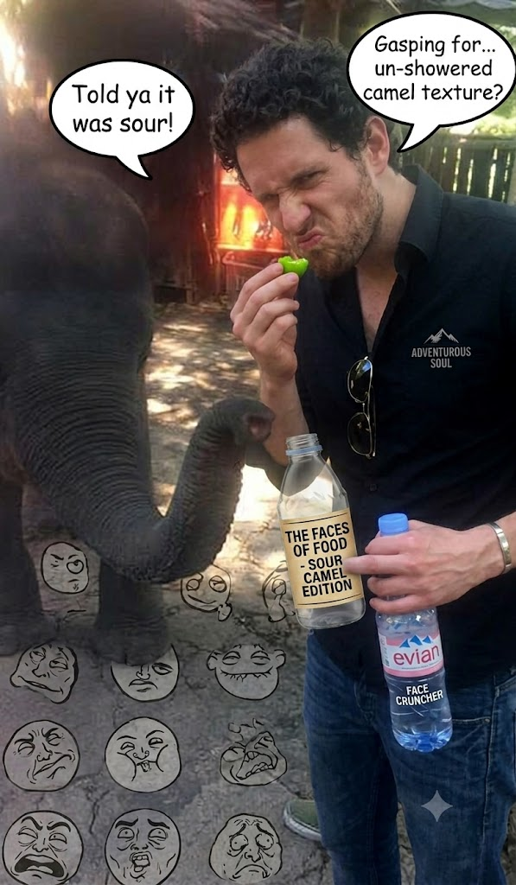

The Faces of Food
Originally written July 23, 2010, 3:56 AM • Uploaded to Facebook on Jul 23, 2010, 3:56 AM

Over the past six months, I have been thoroughly surprised more than once. It is an undeniable truth that my own cultural preconceptions and culinary limitations have been tested time and time again. I like to call myself an adventurous soul, a drifter willing to try absolutely anything, but that is, dear reader, far from the actual truth. At least as far as gastronomy goes.
During these past months, I have discovered a vast lexicon of new dishes, flavors, and particularly in China, a massive array of pungent smells. One could argue that blending all the highly contrasting flavors and intense aromas I’ve encountered deserves a deep second thought, but then again, I’ve had very little time to settle down and repeatedly master any single dish. I have spent my journeys actively chewing on cartilage, connective bone, skin, ears, eyeballs, cheeks, internal innards, scales, raw blubber, and my absolute favorite: kidneys.
Alright, I must confess that on numerous occasions when consuming the items previously detailed, I had absolutely no idea what was actually entering my mouth, who had originally ordered the plate, or why I was eating it in the first place. Many times, I was pleasantly amazed by the staggering richness of the flavors; at other times—such as handling stewed chicken heads—I had to deploy a significant amount of mental discipline just to execute that very first bite.
Yet, there are certain flavors I flat-out cannot tolerate. Take camel, for example. Have you ever smelled a camel up close? Think of your roommate after he has stubbornly refused to shower for a couple of consecutive weeks, even though that lifestyle might be commonplace in your circle. Well, camel meat tastes exactly how the animal smells, and the dense texture is not at all pleasant—especially after you’ve been riding the beast for a full day. Another brutal example is bitter gourd. A single bite forces your face to contort in all kinds of dramatic configurations you never thought your muscles were capable of; but you force a few more swallows and it eventually becomes acceptable, even though your facial features continue to do their own thing while you desperately try to smile and assure your hosts that it tastes really good.
Just the other afternoon, as we were clearing rows in the sugarcane fields, one of my coworkers produced a handful of small, green, pear-shaped wild fruits. I accepted the offering, immediately noticing how the entire crew—all thirty of them—had frozen in their tracks to monitor my reaction. They were all shouting in unison that the fruit was incredibly sweet. In reality, it turned out to be one of the most blindingly sour things I have ever experienced in my life, easily out-punching an industrial sour Warhead candy. As my teeth bit into the flesh, I realized they were fully expecting me to perform a face of absolute disgust. Because I deeply enjoy messing with their expectations, I plastered a massive, effortless smile across my face and cheerfully asked if there were any more left in the sack. The truth is, it was so brutally acidic I could hardly keep it down.
But enough with the travel anecdotes; what I am really trying to articulate is that for the vast majority of my life, I have been actively skirting the truth about my food and its actual origins. As a child, I couldn't stand any meat that displayed stray hairs, dark vessels, or any organic structures that felt like they didn't belong on a plate. I demanded my chicken breast be perfectly white, entirely stripped of veins, nerves, or chewy ligaments. I required my beef charred to a crisp and completely devoid of tactile texture. I absolutely adored chicken nuggets because they contained none of the aforementioned biological surprises. All in all, I think what I was desperately trying to run away from was granting my food a distinct identity—an origin that was once real, alive, and organic.
It wasn't until I began to travel independently and cook my own meals that I finally stopped restricting my food choices to things that felt conventional. I forced myself to consume food displaying scales, internal organs, funky fermented smells, and items that were borderline rotten, focusing on the exact chewy textures that add true personality to a regional dish. Yet, up until my arrival in China, I continued to slide around the full reality. I remember watching the documentary *Food, Inc.*, which made me seriously reconsider eating commercial meat altogether, but I quickly realized maintaining a strict vegetarian stance inside China was going to be an impossible battle.
Arriving in China was a massive shock to my system because it was the first time I was forced to confront full, un-sanitized carcasses served directly to the table. You order a hot pot stew and you receive a complete chicken—head, feet, internal organs, and everything else bobbing in the broth. You order beef chunks and they arrive packed with raw bone, marrow, innards, and heavy cartilage; you order lamb and it features the entire head and brain roasted to perfection. The principal psychological hurdle for me was walking down the market lanes and passing vendors of ducks, chickens, and pigs with the live animals tied tightly around their handlebars, bound and awaiting the cleaver, yet still desperately trying to move.
I was also forced to learn how to consume fish the way the Chinese do: served entirely whole, split down the center and displayed with the skin facing upward, as if the animal were staring at its own reflection in a mirror. Yes, I ate the eyeballs, the cheeks, the swimming fins, the tail, the inner lining, and everything else. To this day, I still harbor doubts as to whether I truly enjoyed those meals, primarily because I can never fully reconcile staring right at the animal while I am actively chewing it. There must be some deep psychological block against consuming a creature while its face is looking back at me. I constantly worry the animal is either going to initiate a conversation, or simply rise from the plate and walk away—a specific panic I endured while handling a whole crab just the other day.
But just as quickly as I intellectualize the animal's life and origin, I am confronted with a wave of internal disgust and the immediate requirement to be brave. Recently, I was eating braised cow tongue; because it had to be sliced directly from the massive, complete organ on the block, I couldn't stop picturing a live cow standing in a pasture chewing grass with that exact muscle. It is vivid internal images like these that actively restrict what I can swallow. Sure, evil odors and funky fermented colors don't help my case, but at least those can be evaluated at face value, without thinking of them as part of a living, breathing creature that walked the earth.
Here in the Philippines, I am forced to navigate the exact same dilemma all over again, especially because I am living on a working farm. Right here in the backyard of the estate house, running directly around the perimeter of the swimming pool, flocks of chickens, turkeys, and pygmy fowl roam free. A few yards further down the lane sit massive pens of hogs that squeal throughout the day. I cannot bear the thought that these specific animals are destined to eventually land on my dinner plate.
On the other hand, out in the sectors with the field crew, I observe daily how systemic poverty completely dictates what they can eat and what they cannot. Take our daily rice consumption as a metric of comparison. If my lunch consists of a small, modest bowl containing roughly six spoonfuls of rice, their portions are a whopping sixteen spoonfuls—simply because they cannot afford auxiliary proteins. Yet, they are incredibly resourceful, taking every available opportunity to exploit their fertile surroundings. They climb the fruit trees to salvage snacks, and they gather wild weeds and alternative plants that are known to be edible.
But what truly breaks my heart is that they regularly harvest the wild frogs that hop so gaily around our boots while we clear the furrows—the exact creatures that make us laugh, jump, and let out startled shouts in the field. Just the other afternoon, one of my friends caught ten massive bullfrogs and, without paying them much attention, stuffed them all alive into a small plastic bag. The sight was surreal because the bag was violently thrashing in all directions on the grass. I knew precisely where those frogs were destined to go. I’ve eaten frog legs before and can passingly enjoy the meat, but playing with them, chasing them across the mud, and keeping them in my pockets for amusement makes me want to consume them less and less. Today, when a supervisor handed me a live, bound frog and told me to take it home for dinner, I carried it back to the house but quietly released it into the safety of the garden bushes before crossing the threshold.
There are nights where I ponder what these animals might be experiencing. I wonder if they truly tolerate being bound in cords or packed into tight crates simply to be converted into industrial food chunks. At least they possess faces. It remains deeply difficult for me to watch a guy climb onto a motorcycle balancing three massive burlap sacks, assuming they are loaded with farm vegetables, only to be startled when one of the bags starts flailing and reveals two little pink snouts poking through the fiber. It was two tiny piglets packed per sack, and absolutely none of them looked pleased with the transit.
I know I am entirely to blame for my own squeamishness. I know exactly when I am being an overly sensitive, picky eater and when I am not. All that I ask is that you take a good look around your own life and honestly evaluate the food you are consuming. Do you actually know where it was harvested? I tell people that when I ate as a child, I was simply dropping pieces of cooked, faceless, anonymous protein into my mouth and chewing, praying for the best. In America and Mexico, our commercial food is engineered to have no bones, no traces of blood, no eyes, and absolutely no indications of a past life. I was raised in a consumer environment that heavily favors this absolute anonymity. I often wonder how many metric tons of nutrient-rich bone, marrow, and offal are wasted globally simply because the Western consumer demands clean, uniform muscle meat.
But there is structural hope out there—not only for my own habits, but for anyone who wants to transition away from simply shoveling fuel into their mouths. As my father used to yell at me when I would meticulously carve my steak away from the marbling: *"The fat is where all the flavor is!"* And he was entirely right. It might not represent the most cardiologically healthy option, but look at China: if you purchase a street skewer of mutton, the vendor intentionally threads three pieces of lean meat alternating with one solid chunk of pure fat, because they recognize that the fat is what dynamically heightens the flavor profile of the entire skewer. You find the exact same rule in elite steakhouses; the choicest cuts celebrated for their luxury flavor are always the ones heavily marbled with equal parts meat to fat.
As I find myself periodically refusing food out in the fields simply because the dish happens to have eyes, I can't help but notice how much less meat I am currently consuming overall. I have to ask myself: if I lack the emotional courage to eat a creature when it has a face, how dare I cynically eat it when it's packaged anonymously? I try every single day to expand my mental horizons; I have successfully accepted whole dried fish, complete squid simmered in its own dark ink, water buffalo liver, and tiny baitfish that you crunch down entirely in a single bite. But I still catch myself hesitating. I remain intensely curious about global flavors, foreign aromas, and bizarre tastes—but it might be a very long time before I can comfortably bite into something that has little eyes staring right back into mine.